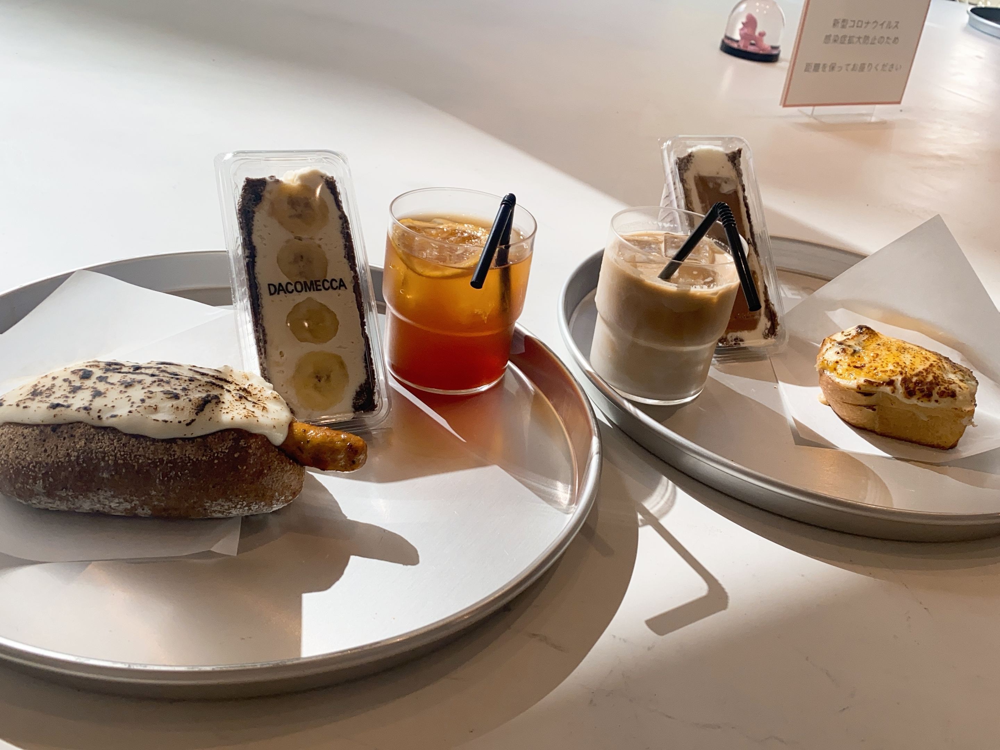

オススメバンド
《04 limited Sazabys》
服部の一生激推しバンド！通称フォーリミ
キャッチーな曲が多く、過去にメニコン・ロート製薬・キリンレモンのCMソングや
ドラマTWO WEEKSの主題歌を担当。Mステ出演経験もアリで徐々にテレビ露出も増えている。
ボーカルのGENくんの唯一無二の声が特徴で正直好き嫌い分かれるけど、MCが熱くてかっこいい。
GENくんはオシャレでインスタで紹介したUNIQLOの服はいつもすぐに売り切れる。 一推しソング▷▶Squall/YouTube《10FEET》
通称テンフィ
初めてフェスで見た時に、夕日の中熱唱する10FEETがかっこよすぎてハマった。
おじさんバンドにしかだせない、熱さというか歌詞の言葉の重みというか...
でもライブでぶち上がる曲もたくさんあるし、MCはコテコテの関西弁で面白いくて幅広い世代に愛されるバンド！！
ボーカルのTAKUMAさんの包容力ある力強い歌声をぜひきいてほしい！！
一推しソング▷▶その向こうへ/YouTube《Hump Back》
通称ハンプ 正直、私は最初女性ボーカルのバンドに抵抗感を持っていたけどハンプに出会って考えが変わった。
ボーカルの萌々子さんの力強い歌声と、本当に音楽が好きなんだなってのが
こっちにも伝わってくるぐらい楽しそうにニコニコ演奏してる姿が素敵！！！
サブスクにあるアルバムはライブバージョンでMC入りだから、聞くだけでテンション上がるし胸が熱くなる！
ガールズバンドだけど、男性ファンも多くてTikTokで流行ってた『拝啓、少年よ』以外にも
背中を押してくれる名曲がたくさんあるからぜひ聞いて欲しい😆
一推しソング▷▶ティーンエイジサンセット/YouTube《HEY-SMITH》
通称ヘイスミ
スカパンクというジャンルで、ホーン隊で、ツインボーカルなのが特徴！！
アメリカ版レコードもだしていて、曲は全部英詞。
ライブはほんっと楽しくてこれまで色々なバンドのライブ行ったけどダントツでヘイスミが楽しい。
曲に合わせて首をっている時は全部忘れてバカになれる。
2021年に『大阪のバンドマン』というチャンネル名でYouTubeも始めて、まじで面白いから
曲にハマれなかった人はYouTubeだけでも見て欲しい。
色々なバンドマンともコラボしていて、プライベートな部分が見れて面白い！！
一推しソング▷▶Don't Worry My Friend/YouTube《HERO COMPLEX》
通称ヒーロー
私も出会ったばかりの福岡出身のバンド。
知名度はまだまだだけど、知る人ぞ知る熱いバンド。
所属しているレーベルはTHE NINTH APOLLOは、有名所でいうとMy Hair is Badと同じ！
日本語詞でストレートに思いをぶつけられる。
音源を通して聞いたとき私はハマらないかな～なんて思ってたけど、ライブ化けに圧倒された。
挫けそうな時に励ましてくれるからぜひ聞いてほしい🔥
一推しソング▷▶風/YouTube《KUZIRA》
実はボーカルの竜之介くんがバンドを始めたきっかけがHEY-SMITH。
2021年にWANIMAも所属しているレーベルPIZZA OF DEATHに所属したり、
サブスクを解禁したりと急激に注目され始めているバンド。
メンバー全員と話したことあるけど、出待ちしてるファン1人1人にステッカーくれるし、
サインくれたり写真とってくれたり本当に優しい🤦♀️
曲も本当にかっこいいから、ぜひ聞いてほしい！！！
一推しソング▷▶Spin/YouTube